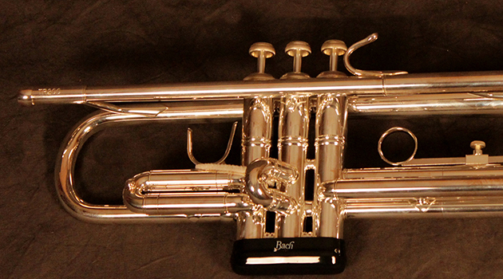

Уже учась в школе, Олег играл на трубе в детском эстрадном оркестре под руководством Семёна Деньковича, а также со специального разрешения играл на свадьбах со старшими товарищами.
Приобретённый таким образом опыт позволил ему в 1985 поступить сразу на второй курс музыкального училища, которое он закончил по
Джейн Монхайт привезет в Москву!Джейн Монхайт привезет в Москву Рождество!
13 декабря в ММДМ
10 декабря
Учился в общеобразовательной школе села Пересадовка (Николаевская область). Уже учась в школе, Олег играл на трубе в детском эстрадном оркестре под руководством Семёна Деньковича, а также со специального разрешения играл на свадьбах со старшими товарищами.
Учился в общеобразовательной школе села Пересадовка (Николаевская область). Уже учась в школе, Олег играл на трубе в детском эстрадном оркестре под руководством Семёна Деньковича
Приобретённый таким образом опыт позволил ему в 1985 поступить сразу на второй курс музыкального училища, которое он закончил по двум специальностям: дирижёр-хоровик и трубач.
10 декабря Аккомпанемент онлайн Развитие музыкального слуха Конкурс им. Табакова онлайн
7 декабря Джаз-гостиная Михаила Митропольского "Импровизация нового века" – ЕКЦ на Никитской
В Москве наступила зима, выпал снег и начались морозы. Праздничное настроение, елочные украшения и запах мандаринов наполнили столицу.10 декабря
Открывать юбилейный фестиваль в Калининград отправляется прославленный отечественный Государственный камерный оркестр джазовой музыки имени Олега Лундстрема.9 декабря
Побережье Майами появился на свет один из лучших саксoфонистов современной Америки – Майрон Уэлден. В 1984 году он и его семья сменили место жительства на окраину Нью-Йорка, Бронкс, и в это же переломное время 7 декабря
Новый диск, вышедший под рекорд-лейблом «ArtBeat», стоит несколько в стороне от предыдущих альбомов музыканта. Как говорит сам Феликс, работая вызвать желание слушать. 9 декабря
В конце сентрября в культурном центре Дом пройдет фестиваль новоджазовой музыки солистов «ОРКЕСТРА МОСКОВСКИХ КОМПОЗИТОРОВ». Большой Овчинниковский переулок, дом 24, 3 ноября
Последний день фестиваля запомнился встречей с тромбонистом-авангардистом из Австрии Марио Вавти - вместе с группой RIDE THE SLIDE. Силу российского джазового мейнстрима 28 октября
Труба — один из древнейших музыкальных инструментов. Упоминания о самых старых инструментах подобного типа датируются приблизительно 3600 лет до н. э.
Трубы существовали во многих цивилизациях — в Древнем Египте, Древней Греции, Древнем Китае и др., и использовались как сигнальные инструменты. Такую роль труба играла в течение многих столетий, вплоть до XVII века.
Эта техника была разработана незадолго до того момента и использовалась при игре на валторне; исполнитель вводил руку в раструб инструмента, добиваясь тем самым иного звучания. Чтобы обеспечить играющему возможность совершить такое действие, была спроектирована натуральная труба полуовальной формы, внешним видом напоминающая полумесяц (в связи с чем во Франции, например, она получила соответствующее наименование — фр. trompette demi-lune). Основным для неё был крон «фа», имелась также возможность перевести звукоряд в «ми-бемоль» или «ре».
Раструб, соответственно, при игре был направлен вбок. Хотя такой дизайн действительно позволял извлекать закрытые звуки, овальный изгиб отрицательно сказался на окраске звучания инструмента, а полученные в результате исполнительские эффекты оказались практически аналогичны закрытым звукам валторны — за исключением того, что последние были сильнее. Указанные недостатки стали причиной того, что уже в первой четверти XIX века труба-полумесяц полностью вышла из употребления.
Итогом второй попытки, которая также была совершена в конце XVIII века, стала так называемая клапанная труба. Хотя этот вид инструмента получил определённое распространение в военных ансамблях, в симфонической музыке указанная труба практически никогда не использовалась
Побережье 3:52
Побережье 3:52
Побережье 3:52
Побережье 3:52
Побережье 3:52
сборник Fuga
68 Fuga Demo Mix NoBass 3:01
55 MixDown Give it one v.2 Lim 3:01
12 My Foolish Heart 3:01
34 The Dr. Is In 3:01
73 Fuga Mix Bass 3:01
31 Way You Mix 3:01
48 The Way You Look Tonight 3:01
История инструмента
Труба — один из древнейших музыкальных инструментов. Упоминания о самых старых инструментах подобного типа датируются приблизительно
3600 лет до н. э.
Трубы существовали во многих цивилизациях — в Древнем Египте, Древней Греции, Древнем Китае и др., и использовались как сигнальные инструменты. Такую роль труба играла в течение многих столетий, вплоть до XVII века.
В Средневековье трубачи были обязательными членами войска, только они могли с помощью сигнала быстро передать приказ командующего другим частям армии, находившимся на расстоянии.
Искусство игры на трубе считалось «элитным», ему обучали только особо отобранных людей. В мирное время трубы звучали на праздничных шествиях, рыцарских турнирах, в крупных городах существовала должность «башенных» трубачей, которые извещали о
10 декабря Аккомпанемент онлайн Развитие музыкального слуха Конкурс им. Табакова онлайн
7 декабря Джаз-гостиная Михаила Митропольского "Импровизация нового века" – ЕКЦ на Никитской